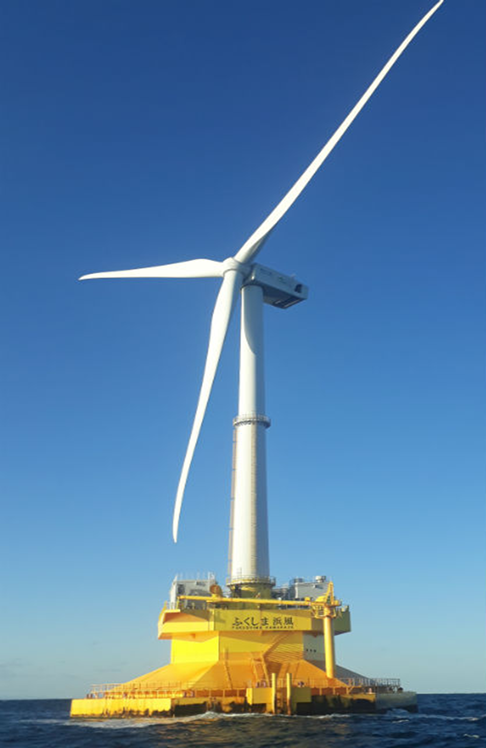

A Evolução da Captura dos VentosA crescente necessidade de alternativas energéticas sustentáveis e virtualmente ilimitadas tem fomentado a criação de equipamentos mais eficientes e sofisticados. Apesar da premissa fundamental da transformação da força dos ventos em eletricidade permanecer inalterada, a área da energia eólica se expandiu em duas vertentes principais, visando otimizar a geração de energia em distintos contextos geográficos: em terra e no mar. Não é mera coincidência que existam essas duas abordagens; elas são uma solução para um problema de localização e deslocamento. As estruturas terrestres (Onshore) se beneficiam da acessibilidade simplificada e dos valores mais em conta, enquanto as plataformas no mar (Offshore) representam a última possibilidade, explorando as correntes de vento do oceano, que são consideravelmente mais rápidas e livres de barreiras físicas. A compreensão dessas técnicas revela como a humanidade está evoluindo na arte de controlar o poder da natureza, seja no alto das elevações ou nas vastidões marítimas. A decisão entre essas tecnologias não se baseia apenas no desempenho dos equipamentos, mas também na busca por um futuro sustentável e no respeito ao meio ambiente. Em terra, o foco está em diminuir o barulho e integrar os projetos com a produção agrícola da região. Já no mar, o desafio é proteger a vida marinha ao mesmo tempo em que se constroem estruturas gigantescas de metal. Essas alternativas, quando combinadas, são essenciais para a mudança na forma como produzimos energia, permitindo que cada lugar aproveite seus recursos naturais para garantir um futuro mais iluminado. |
 https://jornal.usp.br/universidade/plataformas-no-brasil/ |
As turbinas eólicas instaladas em alto mar exibem dimensões notavelmente maiores se comparadas às suas contrapartes terrestres. Enquanto uma turbina comum em terra produz em torno de 2 a 3 MW, uma única unidade marítima tem a capacidade de ultrapassar os 15 MW — energia considerável, suficiente para suprir uma cidade pequena. A razão reside no fato de que, no ambiente oceânico, a ausência de barreiras como edifícios ou árvores possibilita ventos significativamente mais intensos e estáveis, o que explica a opção por essas estruturas colossais.
A energia eólica terrestre aproveita turbinas situadas em terra, frequentemente em áreas planas, colinas ou litorais. Essa é a modalidade mais consolidada e amplamente utilizada de energia eólica globalmente.
Já a energia eólica marítima explora a força dos ventos no oceano. Devido à ausência de obstáculos, os ventos marinhos são consideravelmente mais rápidos, regulares e intensos, viabilizando o uso de equipamentos numa dimensão inviável em terra.
| Característica | Onshore (Terra) | Offshore (Mar) |
|---|---|---|
| Localização | Instaladas no solo, geralmente em serras ou litorais. | Fixadas no leito marinho ou plataformas flutuantes. |
| Custo | Menor custo de instalação e manutenção. | Investimento elevado devido à logística marítima. |
| Eficiência | Ventos menos constantes devido a obstáculos (relevo). | Ventos muito mais fortes, rápidos e constantes. |
| Impacto Visual/Sonoro | Mais perceptível para populações locais. | Mínimo, por estarem longe da costa. |